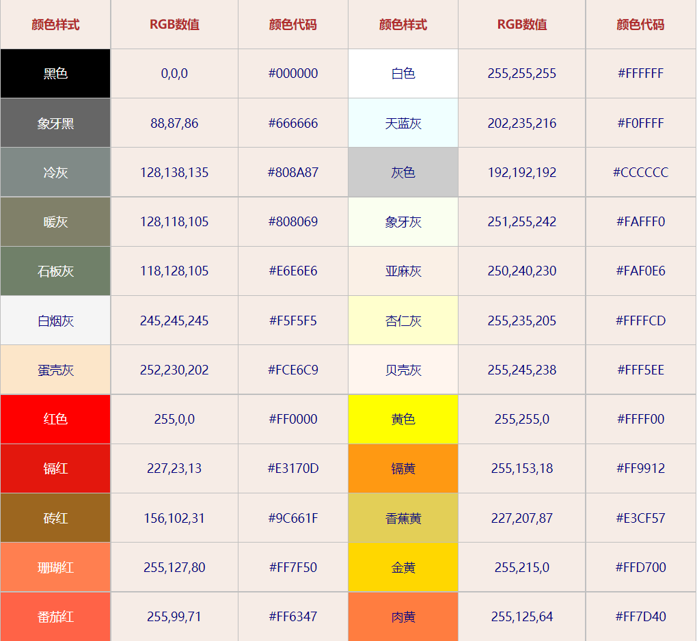
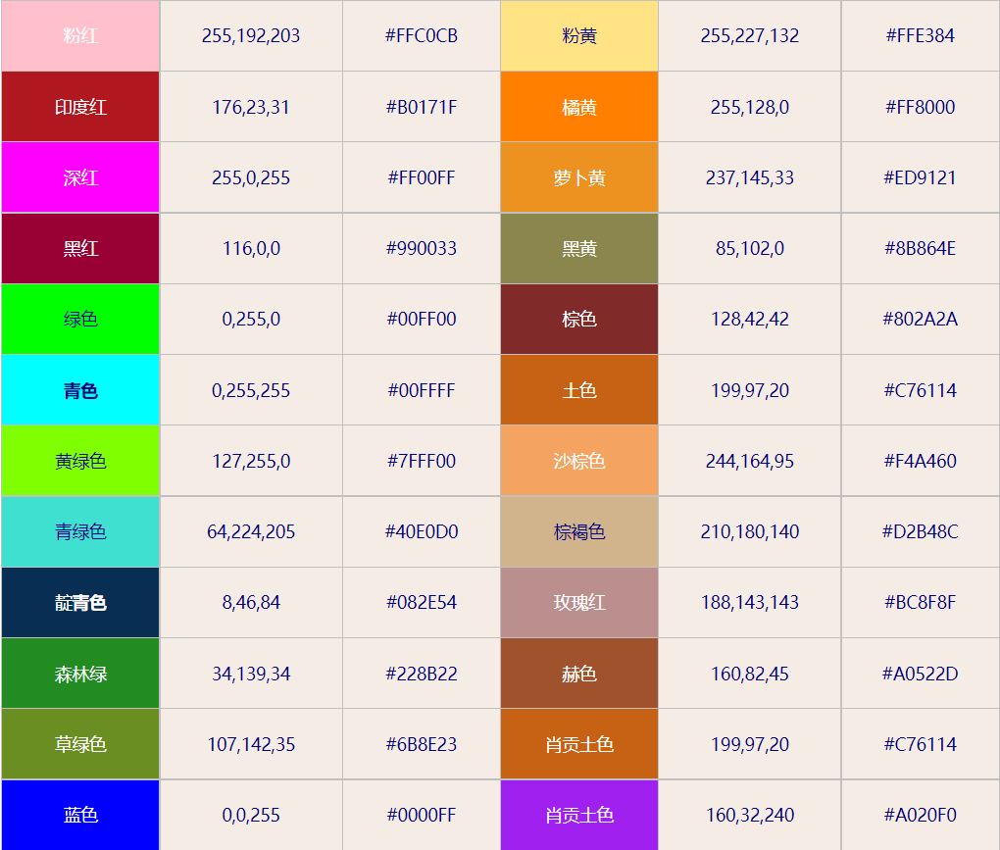
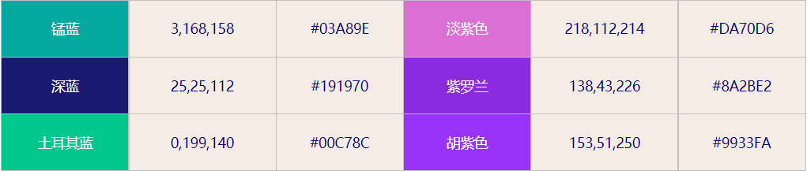
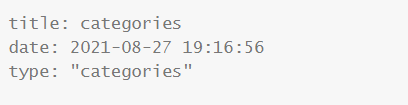

博客改良(持续记录)
1.删除强力驱动：
1.在【themes/layout/_partial/footer】文件中的最后，删除如下代码
1 | {%- if theme.footer.powered %} |
2.同样，如果想在该位置添加一些别的文字，直接在这个文件里面加就行
2.更改字体颜色：
在_data文件里面添加：
1 | color #色号 |



3.利用不通的分类：
这里用“categories”为例
找到在categories目录下的哪个index.md文件，在开头的地方加上一行
1 | type: "categories" |
效果：

这样就可以在那个界面里面看到不通的分类了
4.在文中添加超链接
利用markdown特性，将链接放在<>中间
例如https://hellorootkit.github.io
5.修改字体颜色
1.修改博文标题：
找到目录\hexo-theme-next\source\css_common\components\post下的post-header文件
然后找到.post-title-link
修改颜色即可生效
2.修改博文颜色：
同2
3.日志分类标签统计：
目录\hexo-theme-next\source\css_common\outline\sidebar\site-state.styl
1 | .site-state-item-name { |
4.头像下面和描述：
目录\hexo-theme-next\source\css_common\outline\sidebar\author.styl
5.站点描述：
themes\hexo-theme-next\source\css_schemes\Pisces_sidebar.styl
1 |
|